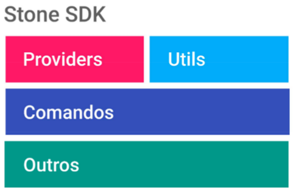
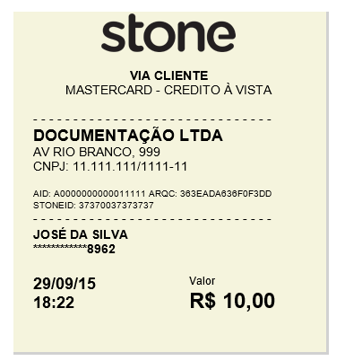
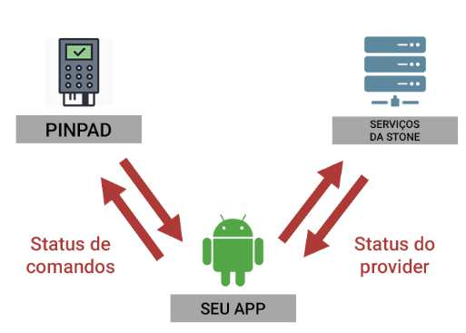

Introdução
O SDK da Stone para Android oferece uma forma simples e rápida para iniciar sua integração. Com o SDK é possível integrar um dispositivo com bluetooth e Android 2.3 ou superior com o serviço Stone. A SDK V2 segue estrutura da imagem abaixo:

A SDK foi dividida em 4 módulos:
- Providers
- Utils
- Comandos
- Outros
Providers
Todos os providers seguem o mesmo modelo. Todos herdam de uma classe modelo que extende da classe AsyncTask do Android. Então toda escritas e leitura de comandos com o Pinpad, requisições de transações e ativações, conexões e etc, serão executadas em uma thread secundária do método ‘doInBackground’.
Todas podem rodar em background ou com um simples feedback para o seu usuário (um dialog com um título e uma mensagem de sua escolha).
Após a execução do provider, ele realizará uma chamada de retorno para a sua aplicação (Callback), posteriormente iremos ver um exemplo de como isso funciona.
Métodos genéricos dos Providers:
| Método | Descrição |
|---|---|
| setWorkInBackground (boolean) | Com este método você irá informar se o provider deverá ou não ser executado em segundo plano. Todos rodam em background por default. |
| setActivity(Activity) | Para que uma mensagem de feedback seja exibida (caso você passe false no método setWorkInBackground) o Android irá pedir uma activity. Desta forma, ele exibá o Dialog para o usuário com a sua mensagem. |
| setDialogMessage(String) | Esse método informa qual mensagem será exibida no Dialog de feedback. |
| setDialogTitle(String) | Esse método informa qual mensagem será exibida no título do Dialog de feedback. |
| setConnectionCallback(StoneCallbackInterface) | Cria uma classe anônima que possui dois métodos onSuccess (método chamado se o provider for executado com sucesso) e onError (método que será chamado se ocorrer uma Exception). |
| getListOfErrors() | Esse método retornará uma lista com os erros que ocorreram. |
Lista de Providers disponíveis
- ActiveApplicationProvider (Responsável por ativar a sua aplicação)
- BluetoothConnectionProvider (Responsável por criar conexão bluetooth com um pinpad a partir de um mac address)
- CancellationProvider (Responsável por realizar um cancelamento de uma transação)
- DisplayMessageProvider (Exibe uma mensagem de até 32 caracteres na tela do Pinpad)
- DownloadTablesProvider (Responsável por acessar os servidores da Stone e fazer o download das tabelas AIDs e CAPKs)
- LoadTablesProvider (Responsável por enviar as tabelas AIDs e CAPKs para os pinpads, utilize esse provedor caso a transação dê erro 20)
- PrintProvider (Responsável por realizar impressões nos Pinpads que possuem suporte para impressão)
- PrintReceipterProvider (Responsável por realizar impressões de comprovantes de vendas nos Pinpad que possum suporte para impressão)
- SendEmailProvider (Responsável por enviar uma nota eletrônica por email)
- TransactionProvider (Responsável por realizar a captura dos cartões, enviar as transações e manipular as mesmas no banco de transações do dispositivo)
- ValidateTransactionByCardProvider (Verifica se existe transação para o cartão utilizado no TransactionDAO);
Utils
No modulo Utils, você possui ferramentas que podem lhe ajudar na criação da sua aplicação.
Com esse modulo você terá as seguintes ferramentas:
- ConnectionValidator (teste de conexão)
- Utilities (utilitários para a sua aplicação, por exemplo, nomalizador de Strings)
- GlobalInformations (informações que ficam compartilhadas entre a sua aplicação e a SDK)
- StopWatch (um simples cronômetro para benchmark)
- Criptografia e descriptografia
- ConnectionPost (realiza post para uma aplicação REST utilizando XML)
- TransactionDAO (banco de transações, as transação são salvas e atualizadas durante a execução do TransactionProvider)
- PinpadDAO (banco de pinpads já conectados)
- ApplicationCache (CRUD para a sua aplicação, ele trabalha na pasta ‘file’ da sua aplicação)
Comandos e Outros
Esse módulo contém os comandos de leitura e escrita que são utilizados para se comunicar com os Pinpads.
Os mesmos utilizados pelos Providers sempre que necessário.
Tutorial de integração
Preparando a sua aplicação
Para você iniciar a integração com a Stone, existe um repositório no GitHub - https://github.com/stone-pagamentos/sdk-android-V2 - no qual você pode obter o nosso app demo que te ajudará a integrar de uma forma rápida com a SDK e os JARs de integração.
No repositório, os JARs de integração estão divididos em duas partes, /JARs/Stone/ contém um único jar com as seguintes dependências:
Para envio de email
- Mail.jar
- Activation.jar
- Additional.jar
Base64 Encoder
- Commons-codec.jar
JSON
- Gson_v1.7.2.jar
XML
- XStream_v1.4.7.jar
Os JARs que estão na pasta /JARs/Dependências/ são todos os JARs que foram mencionados e o .jar da Stone. Você pode utilizer isso caso você já possua uma destas libs em sua aplicação.
Iniciando a integração
Após adicionar o .jar de integração no seu projeto, é importante que você chame o método na Main do seu projeto:
StoneStart.init( [SUA MAIN ACTIVITY] )
Esse método irá retornar uma lista de objetos do tipo UserModel.
UserModel representa o seu usuário, ele irá carregar as informações em cache (estas informações são utilizadas constantemente pela SDK). Caso esse método retorne null, indica que você não fez a chamada do provider ActiveApplicationProvider, como temos de exemplo o código ao lado:
/* Este deve ser, obrigatoriamente, o primeiro método
* a ser chamado. É um método que trabalha com sessão.
*/
List<UserModel> listOfUser = StoneStart.init(SUA_MAIN_ACTIVITY_AQUI);
// se o retorno for nulo, então você provavelmente não ativou a SDK
// ou as informações da Stone SDK foram excluídas.
if (listOfUser == null) {
List<String> stoneCodeToActiveList = new ArrayList<String>();
stoneCodeToActiveList.add(STONE_PRODUCTION_KEY);
ActiveApplicationProvider activeApplicationProvider = new activeApplicationProvider(SUA_MAIN_ACTIVITY_AQUI, stoneCodeToActiveList); // você deve colocar seu StoneCode aqui
activeApplicationProvider.setDialogMessage("Ativando o aplicativo...");
activeApplicationProvider.setDialogTitle("Aguarde");
activeApplicationProvider.setWorkInBackground(false);
activeApplicationProvider.setConnectionCallback(new StoneCallbackInterface() {
/* Sempre que utilizar um provider, instancie essa interface.
* Ela irá lhe informar ser o provider foi executado com sucesso ou não.
*/
/* Método chamado se for executado sem erros */
public void onSuccess() {
Toast.makeText(getApplicationContext(), "Ativado com sucesso, iniciando o aplicativo", Toast.LENGTH_SHORT).show();
continueApplication();
}
/* Método chamado caso ocorra alguma exceção */
public void onError() {
Toast.makeText(getApplicationContext(), "Erro na ativação do aplicativo, verifique a lista de erros do provider", Toast.LENGTH_SHORT).show();
// chame o método abaixo para verificar a lista de erros.
// activeApplicationProvider.getListOfErrors();
}
});
activeApplicationProvider.execute();
} else {
/* Caso sua aplicação já tenha as informações do SDK e chamado o ActiveApplicationProvider
* anteriormente, sua aplicação poderá seguir o fluxo normal
*/
continueApplication();
}
Feito isso e sua SDK estando ativada, você está pronto para iniciar suas transações.
Conexão Bluetooth
A conexão Bluetooth é realizada também pela SDK, você deverá utilizar o BluetoothConnectionProvider para criar conexões com os Pinpads.
Nós recomendamos que você liste todos os aparelhos que já foram conectados com o dispositivo na sua aplicação com a função “BluetoothAdapter.getBondedDevices()” do Android. Ela retornará o histórico de aparelhos do Bluetooth.
Para utilizar o BluetoothConnectionProvider, você precisará passar um parâmetro do tipo PinpadObject.
Este objeto representa um Pinpad com os seguintes atributos:
| Tipo | Nome | Função |
|---|---|---|
| Integer | id | ID do Pinpad quando for carregado pelo PinpadDAO |
| String | name | Nome do Pinpad (format: MODELO-SERIAL) |
| String | macAddress | Mac address do dispositivo bluetooth |
| boolean | printSupport | Se o Pinpad possui suporte para impressão |
| String | timeToConnect | Tempo que levou para criar a última conexão |
| int | majorDevice | O tipo do Bluetooth (headset, phone, pc…..) |
Para passar criar uma conexão, basta instanciar um objeto do tipo PinpadObject e informar o nome e o mac address do dispositivo. Estas informações pode ser obtidas com os itens que são retornados da função BluetoothAdapter.getBondedDevices();” do Android.
Feito isso e conexão realizada com sucesso, o Pinpad será adicionado em uma lista de Pinpads conectados na classe GlobalInformations, para obter a lista, você pode utilizar o método GlobalInformations .getPinpadListSize(). Esse método pode te retornar null caso o Bluetooth esteja desligado ou não havendo conexão.
Sempre que a SDK solicitar um Pinpad como parâmetro, você pode passar GlobalInformations .getPinpadFromListAt(0), se você estiver conectado somente com um pinpad.
Provedor de transação
Passar transações com a nova SDK é simples e rápido. A primeira coisa que deve se fazer é instanciar um objeto do tipo StoneTransaction.
// passe o PinPAD que você está conectado. Apenas para lembrar, se você estiver conectado
// com apenas 1 PinPAD, você deve passar GlobalInformations.GlobalInformations.getPinpadFromListAt(0)
StoneTransaction stoneTransaction = new StoneTransaction(PIN_PAD_QUE_VOCE_ESTA_CONECTADO);
Esse objeto representa a sua transação que será enviada. Ela possui os seguintes atributos:
| Tipo | Nome | Função |
|---|---|---|
| String | amount | Valor da transação |
| String | requestId | Id do pedido |
| String | initiatorTransactionKey | Esse é um identificador da transação que aparece no portal. A SDK possui um padrão próprio para gerar um identificador único e usará esse padrão se um identificador não for definido. Caso você queira passar o seu próprio identificador, certifique-se que ele será sempre único para todos os seus clientes. |
| EmailClient | emailClient | Seu email de noReply para envio do comprovante eletrônico |
| InstalmentTransactionEnum | instalmentTransactionEnum | Quantidade de parcelas, mais informações na tabela abaixo |
| TypeOfTransactionEnum | typeOfTransactionEnum | Tipo da transação: débito ou crédito |
| PinpadObject | pinpadObject | O pinpad que você deseja passar a transação |
| String | shortName | Nome de exibição no extrato do cliente (máximo de 14 caracteres) |
Para a StoneTransaction, a quantidade de parcelas é passada por um enum chamado InstalmentTransactionEnum, segue a tabela com cada nome e valor:
| Nome | Valor |
|---|---|
| ONE_INSTALMENT | À vista |
| TWO_INSTALMENT_NO_INTEREST | 2 vezes sem juros |
| THREE_INSTALMENT_NO_INTEREST | 3 vezes sem juros |
| FOUR_INSTALMENT_NO_INTEREST | 4 vezes sem juros |
| FIVE_INSTALMENT_NO_INTEREST | 5 vezes sem juros |
| SIX_INSTALMENT_NO_INTEREST | 6 vezes sem juros |
| SEVEN_INSTALMENT_NO_INTEREST | 7 vezes sem juros |
| EIGHT_INSTALMENT_NO_INTEREST | 8 vezes sem juros |
| NINE_INSTALMENT_NO_INTEREST | 9 vezes sem juros |
| TEN_INSTALMENT_NO_INTEREST | 10 vezes sem juros |
| ELEVEN_INSTALMENT_NO_INTEREST | 11 vezes sem juros |
| TWELVE_INSTALMENT_NO_INTEREST | 12 vezes sem juros |
| TWO_INSTALMENT_WITH_INTEREST | 2 vezes com juros |
| THREE_INSTALMENT_WITH_INTEREST | 3 vezes com juros |
| FOUR_INSTALMENT_WITH_INTEREST | 4 vezes com juros |
| FIVE_INSTALMENT_WITH_INTEREST | 5 vezes com juros |
| SIX_INSTALMENT_WITH_INTEREST | 6 vezes com juros |
| SEVEN_INSTALMENT_WITH_INTEREST | 7 vezes com juros |
| EIGHT_INSTALMENT_WITH_INTEREST | 8 vezes com juros |
| NINE_INSTALMENT_WITH_INTEREST | 9 vezes com juros |
| TEN_INSTALMENT_WITH_INTEREST | 10 vezes com juros |
| ELEVEN_INSTALMENT_WITH_INTEREST | 11 vezes com juros |
| TWELVE_INSTALMENT_WITH_INTEREST | 12 vezes com juros |
// a seguir deve popular o objeto
stoneTransaction.setAmount(valueEditText.getText().toString());
stoneTransaction.setEmailClient(null);
stoneTransaction.setRequestId(null);
/* AVISO IMPORTANTE: Não é recomendado alterar o campo abaixo do
* ITK, pois ele gera um valor único. Contudo, caso seja necessário,
* faça conforme a linha abaixo:
*/
stoneTransaction.setInitiatorTransactionKey("SEU_IDENTIFICADOR_UNICO_AQUI");
// informa a quantidade de parcelas
stoneTransaction.setInstallmentTransactionEnum(installmentsSpinner.getSelectedItemPosition());
// verificação de que a forma de pagamento foi selecionada
if (debitRadioButton.isChecked() == true) {
stoneTransaction.setTypeOfTransaction(TypeOfTransactionEnum.DEBIT);
} else {
stoneTransaction.setTypeOfTransaction(TypeOfTransactionEnum.CREDIT);
}
Após instanciar e popular o objeto StoneTransaction, você poderá passar o mesmo para o TransactionProvider, que será o responsável por enviar a transação para o autorizador e trabalhar com a inserção e atualização no TransactionDAO.
Lembrando que TransactionProvider segue a mesma estrutura do ActiveApplicationProvider, BluetoothConnectionProvider e os demais. Esse provider pede uma Activity e a StoneTransaction que foi criada anteriormente.
Seguindo o exemplo ao lado:
// processo de envio da transação
final TransactionProvider provider = new TransactionProvider(SUA_ACTIVITY_AQUI, stoneTransaction);
provider.setDialogMessage("Enviando");
provider.setDialogTitle("Aguarde");
provider.setWorkInBackground(false);
provider.setConnectionCallback(new StoneCallbackInterface() {
public void onSuccess() {
// ...
}
public void onError() {
// ...
}
});
provider.execute();
Após a execução do provider, a sua aplicação receberá uma chamada no método onSuccess() ou onError().
Para ter acesso ao status da transação, você deve utilizar o método getTransactionStatus() que retornará um enum com os seguintes valores:
|Nome|Valor| |UNKOWN|Ocorreu um erro antes de ser enviada para o autorizador| |APPROVED|Transação aprovada com sucesso| |DECLINED|Transação negada| |CANCELLED|Transação cancelada (ocorre no cancelamento, CancellationProvider)| |PARTIAL_APPROVED|Transação foi parcialmente aprovada| |TECHNICAL_ERROR|Erro técnico (ocorreu um erro ao processor a mensagem no autorizador)| |REJECTED|Transação rejeitada|
Em caso de REJECTED e DECLINED, você pode capturar a mensagem do autorizador com o método getMessageFromAuthorize(). Mensagens como por exemplo: “Saldo insuficiente”, “Cartão inválido”, “Violação de segurança”..
Provedor de impressão
O provedor de impressão, PrintProvider, pode ser utilizado apenas com pinpads que possuem suporte a print.
Na assinatura do construtor, o PrintProvider irá pedir três parâmetros, uma Activity, uma lista de PrintObject e o Pinpad que irá imprimir o seu comprovante.
PrintObject representa cada linha que será impressa pelo PrintProvider.
| Tipo | Nome | Função |
|---|---|---|
| String | message | Mensagem que será impressa (por linha) |
| Integer | size | Tamanho da impressão, SMALL, MEDIUM ou BIG, todos dentro do objeto PrintObject |
| Integer | align | Alinhamento da impressão, LEFT, CENTER ou RIGHT, todos dentro do objeto PrintObject |
// lógica de impressão
// declara a lista de impressão,
// lembrando o que cada item representa
List<PrintObject> listToPrint = new ArrayList<PrintObject>();
for (int i = 0; i < 10; i++) {
listToPrint.add(new PrintObject("Teste de impressão linha " + i, PrintObject.MEDIUM, PrintObject.CENTER));
}
final PrintProvider printProvider = new PrintProvider(SUA_ACTIVITY_AQUI, listToPrint, O_PINPAD_QUE_VOCE_VAI_USAR);
printProvider.setWorkInBackground(false);
printProvider.setDialogMessage("Imprimindo");
printProvider.setConnectionCallback(new StoneCallbackInterface() {
public void onSuccess() {
// ...
}
public void onError() {
// ...
}
});
printProvider.execute();
A SDK irá interpreter cada item da sua lista (cada PrintObject) como uma linha a ser impressa.
Com o código que foi passado na imagem anterior, ele rodará um for e criar 10 linhas de impressão. O provider será executado e terá o seguinte resultado:
Provedor de impressão - Recibo
O provedor de impressão, PrintReceiptProvider, pode ser utilizado apenas com pinpads que possuem suporte a print.
Na assinatura do construtor, o PrintProvider irá pedir quatro parâmetros, um Context, um PinpadObject (Pinpad que irá imprimir o seu comprovante), o ID da transação que deseja imprimir e um UserModel que representa o seu usuário, que contém as informações necessárias para a impressão.
final PrintReceiptProvider printReceiptProvider = new printReceiptProvider(SUA_CONTEXT_AQUI, GlobalInformations.getPinpadFromListAt(0),
idTransaction, GlobalInformations.getUserModel(0));
printReceiptProvider.setWorkInBackground(false);
printReceiptProvider.setDialogMessage("Imprimindo");
printReceiptProvider.setConnectionCallback(new StoneCallbackInterface() {
public void onSuccess() {
// ...
}
public void onError() {
// ...
}
});
printReceiptProvider.execute();

A SDK montará todo o comprovante automaticamente (de acordo com o id de transação fornecido e contato que o transação exista no TransactionDAO).
Provedor de cancelamento
O provider de Cancelamento, CancellationProvider, é um dos provedores mais simples.
Para efetuar um cancelamento, você deve instanciar o CancellationProvider e passar sua Activity e o ID da transação que deseja passar (você pode obter todos os IDs das transações com o TransactionDAO).
Provedor de Display
DisplayMessageProvider exibe uma mensagem de até 32 caracteres a tela do Pinpad.
Provedor de Email
SendEmailProvider é o provedor responsável pelo envio do email. Ele serve apenas para enviar um email, não o comprovante eletrônico da sua transação.
Esse provider pedirá um objeto do tipo EmailClient, esse objeto represente o seu client de noReply SMTP.
Configurando ele de forma correta, o provedor funcioná normalmente.
| Tipo | Nome | Função |
|---|---|---|
| String | smtpHost | Host do seu cliente de email |
| String | smtpPort | Porta do host (default: 587) |
| String | sport | Secure port do host (default: 587) |
| String | user | Seu usuário de login |
| String | password | Sua senha de login |
| String | from | Seu email |
| String | sendTo | Email do seu cliente |
| String | subject | Assunto do email |
| String | messageToSent | Mensagem que será enviada |
Para criar o comprovante eletrônico, o seu objeto de EmailClient possui um método chamado receiptAsHtml(Context, transactionId). Ele retornará uma String e a mesma deve ser passada como parâmetro no SendEmailProvider como mensagem para enviar.
Provedor de tabelas AID e CAPK
O DownloadTablesProvider é o provedor de tabelas, isso é muito importante de ser chamado sempre na Main da sua aplicação. As tabelas AID e CAPK, resumidamente falando, são tabelas que ficam armazenadas nos Pinpads e os dizem como trabalhar com cada tipo de cartão. Esse provider só possui a função de acessar os serviços da Stone e baixa-las para o dispositivo.
Utilize um objeto do tipo ApplicationCache (módulo Utils) para verificar se existem ou não as tabelas.
// IMPORTANTE: Mantenha esse provider em sua main pois ele irá
// baixar as tabelas AIDs e CAPKs dos servidores da Stone e será
// utilizada quando necessário.
ApplicationCache applicationCache = new ApplicationCache(getApplicationContext());
if (applicationCache.checkIfHasTables() == false) {
// realiza o download das tabelas
DownloadTablesProvider downloadTablesProvider = new DownloadTablesProvider(SUA_ACTIVITY_AQUI);
downloadTablesProvider.setDialogMessage("Baixando as tabelas, por favor aguarde");
downloadTablesProvider.setWorkInBackground(false);
downloadTablesProvider..setConnectionCallback(new StoneCallbackInterface() {
public void onSuccess() {
// ...
}
public void onError() {
// ...
}
});
downloadTablesProvider.execute();
}
É importante deixar claro também que esse provider só possui a função de baixar as tabelas. A função de carregar as tabelas nos Pinpads é responsabilidade do LoadTablesProvider. Este deve ser chamado, caso o TransactionProvider retorne um erro de DIFFERENT_TABLES_EMV (veremos logo o que isso quer dizer).
Provedor de validação de transação
O ValidateTransactionByCardProvider é o provedor de que verifica se existe no TransactionDAO, transações realizadas para um determinado cartão.
Na assinatura do construtor, o ValidateTransactionByCardProvider irá pedir dois parâmetros, um Context, um PinpadObject (Pinpad em que será inserido o cartão).
final ValidateTransactionByCardProvider validateTransactionByCardProvider(SUA_ACTIVITY_AQUI, O_PINPAD_QUE_VOCE_VAI_USAR);
validateTransactionByCardProvider.setDialogMessage("Validando Transação");
validateTransactionByCardProvider.setDialogTitle("Aguarde");
validateTransactionByCardProvider.setWorkInBackground(false);
validateTransactionByCardProvider.setConnectionCallback(new StoneCallbackInterface() {
public void onSuccess() {
// para saber se existem transações com esse cartão:
List<TransactionObject> transactionsWithThisCard = validateTransactionByCardProvider.getTransactionsWithCurrentCard();
}
public void onError() {
// ...
}
});
validateTransactionByCardProvider.execute();
Tipos de Response
Introdução
Quando nos referimos a “Response”, não estamos falando exatamente de response de algum request para os servidores da Stone. Vamos dividir o assunto entre responses da biblioteca compartilhada e responses da SDK.
Observando a seguinte imagem:

Os Status de comandos são referentes as respostas que são dadas pela biblioteca compartilhada, mais abaixo você verá uma lista com as possíveis respostas e o que cada uma significa.
Os Status do provider são referentes aos erros que podem ter durante a execução de determinados providers.
Status de Comandos
| Nome | Valor | Significado |
|---|---|---|
| COMMAND_OK | 0 | Comando executado com sucesso |
| NO_SECURE_COMMUNICATION | 3 | Não foi estabelecida uma conexão segura com o Pinpad |
| PRESS_1 | 4 | Pressione F1 |
| PRESS_2 | 5 | Pressione F2 |
| PRESS_3 | 6 | Pressione F3 |
| PRESS_4 | 7 | Pressione F4 |
| PRESS_BACKSPACE | 8 | Pressione espaço |
| DEC_ERROR | 9 | Erro de decodificação |
| INVALID_CALL | 10 | Chamada inválida |
| INVALID_PARAMETER | 11 | Parâmetro inválido |
| TIME_OUT | 12 | Time out |
| OPERATION_CANCELLED_BY_USER | 13 | Operação cancelada pelo usuário |
| NOT_OPEN | 15 | Comando OPN não enviado |
| PARAMETER_NOT_FOUND | 19 | Falta de um parâmetro mandatório |
| DIFFERENT_TABLES_EMV | 20 | Tabelas AID e CAPK diferentes |
| TABLES_UPLOAD_ERROR | 21 | Erro na carga de tabelas |
| PINPAD_INTERNAL_ERROR | 40 | Erro interno do Pinpad |
| MAGNETIC_CARD_ERROR | 41 | Erro na leitura da tarja |
| MK_DUKPT_NOT_FOUND | 42 | DUKPT não encontrada |
| NO_ICC_PRESENCE | 43 | Não há presença de ICC |
| PINPAD_CANT_PROCESS_PIN_CAPTURE | 44 | O pinpad não conseguiu processar a captura da senha |
| RESPONSE_DATA_LIMIT_EXCEEDED | 45 | Resposta excedeu o limite de informações |
| SAM_NOT_FOUND | 51 | SAM não encontrado |
| ICC_NOT_FOUND | 60 | ICC não encontrado |
| COMMUNICATION_ICC_OR_CTLS_ERROR | 61 | Erro de comunicação ICC ou CTLS |
| INVALID_CARD | 67 | Cartão inválido |
| ICC_WITH_PROBLEM | 68 | Problemas no ICC |
| INVALID_DATAS_IN_ICC | 69 | Informações inválidas no ICC |
Status do Provider
| Nome | Solução |
|---|---|
| CONNECTION_NOT_FOUND | Sem conexão com a internet, ligue a internet |
| DEVICE_NOT_COMPATIBLE | Dispositivo bluetooth não possui a biblioteca compartilhada |
| UNEXPECTED_STATUS_COMMAND | Status de um comando inexperado, tente novamente |
| GENERIC_ERROR | Um erro genérico |
| IO_ERROR_WITH_PINPAD | Erro de leitura e escrita com o Pinpad |
| PINPAD_CONNECTION_NOT_FOUND | Sem conexão com um Pinpad, conecte-se com um dispositivo |
| NO_ACTIVE_APPLICATION | SDK não foi ativada. Chame o ActiveApplicationProvider |
| TABLES_NOT_FOUND | Tabelas AID e CAPK não encontradas, chame o DownloadTablesProvider |
| UNKNOWN_TYPE_OF_USER | Um tipo de usuário desconhecido, Usuário final ou Desenvolvedor (User ou Partner) |
| INVALID_AMOUNT | Valor inválido para passar a transação |
| NEED_LOAD_TABLES | Chame o LoadTablesProvider para realizar a carga de tabelas |
| TIME_OUT | Time out, tente novamente |
| OPERATION_CANCELLED_BY_USER | Operação cancelada pelo usuário, provavelmente o botão X foi pressionado |
| CARD_REMOVED_BY_USER | Cartão removido pelo usuário indevidamente |
| CANT_READ_CARD_HOLDER_INFORMATION | Erro na leitura das informações do cartão, tente novamente |
| INVALID_TRANSACTION | Transação inválida, talvez um cartão de crédito esteja passando uma transação de débito, ou vice-versa. |
| PASS_TARGE_WITH_CHIP | Cartão de chip passou tarja |
| NULL_RESPONSE | Não houve resposta do Pinpad |
| ERROR_RESPONSE_COMMAND | Erro na resposta do comando |
| ACCEPTOR_REJECTION | Transação rejeitada pelo autorizador |
| EMAIL_MESSAGE_ERROR | Erro no envio do email |
| INVALID_EMAIL_CLIENT | Email do cliente é inválido |
| INVALID_STONE_CODE_OR_UNKNOWN | StoneCode foi digitado de forma errada ou não existe |
| TRANSACTION_NOT_FOUND | Não se pode cancelar uma transação que não foi aprovada |
Usuários e desenvolvedores
// no início do seu projeto
UserModel userModel = StoneStart.init(SUA_ACTIVITY_AQUI);
// diz que é um desenvolvedor com essas duas linhas de código
Partner partnerDeveloper = new Partner(userModel);
GlobalInformations.sessionApplication.setUserModel(partnerDeveloper);
Umas das novidades da SDK 2.0 é que agora quando você chama a StoneStart.init no início do seu projeto e iniciar o projeto como parceiro (Partner), esse é um perfil que roda na sessão da SDK. Isso permite que ao passar uma transação ou executar um cancelamento, aponte para os ambientes de testes da Stone (a troca de endpoint é feita dentro da própria SDK, o desenvolvedor parceiro não precisa se preocupar em trocar os endpoints).